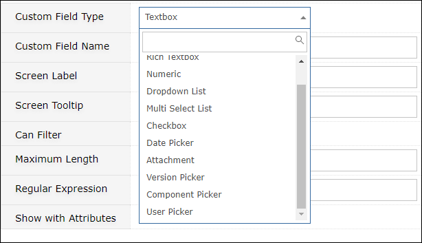

FAQ - Gemini Fields with Special Behaviour
A brief guide to some of the builtin fields in Gemini that have special functionality, and a description of some of the less well known qualities of Custom Fields.
Builtin Fields
Resource
- If "Send Email Alerts" and "Auto-email Assigned Resource" are enabled at a system level, users in the Resource field will receive automatic Resource Assignment Notifications. Resource is therefore a field that can trigger additional actions.
- Resource is a field that can be intepreted by Rules and Actions both as a condition to test e.g "Resource = person X", or "Resource <> ''", but also in the action list where the token {resource} can be used to determine recipients of rule-generated emails. One fact worth noting is that you can only ever have ONE rule-generated email per item, so recipients cannot be spammed.
- Users in the Resource field of an item can always see the item in Gemini, regardless of who owns it. People can't be assigned to tasks they can't see.
- There are some additional features of the Resource field that sometimes catch people out
- Whether you can assign one or more people as resources to a single work item is a per-project setting. Edit the project definition to set the option on single/multiple resources per item.
- Resources are not automatically Followers unless you enable the Auto-Follower Event App. Followers are people who receive email notifications on changes to items they are 'following'. Often they are external users/clients, and as such they are in the Portal User Group. Members of this group have a restricted view of items and can only see items they create or are assigned to. Just making a Portal user a follower will not make Gemini send the Portal User Follower notifications. Gemini always applies the most restrictive permissions, so Portal Users must be Resources to override the Portal User restrictions.
Reporter/Reported By
- You might think the Creator field in Gemini holds the 'owner' of a work item. That is not the case. The owner of an item in Gemini is the Reported By user (or 'Reporter'). If no Reported By user is specified, the Creator is defaulted into that field. This subtle distinction is what allows one user to create an item in Gemini on another user's behalf, where the 'Reporter' is the owner and the 'Creator' is just the intermediary. Not all organizations have the scenario where one user creates items for other users, and so Reported By is often disabled on Screens, but if you did have such a scenario then you would enable the Reported By field and on data entry it will populate a list of users from which the item's true owner is selected. FYI for developers - Gemini does not test the Created By field for ownership, it checks Reported By.
Status
Gemini is designed to take work from Open to Closed. Status is the only way you define a work item as closed in Gemini, the system does not use words; naming a Status 'Closed' means nothing in Gemini. If you define a Status as 'Final', then Gemini regards any item in that Status as Closed, and by default will remove it from view (though you can easily ask to see it). You can have as many Final Statuses as you need; closed is not the only status that might remove an item from regular view.
- Status is tied to Workflow, and Workflow has security around it. Make sure you read about Workflow and check the existence of status transitions and the User Groups permitted to make them if you have issues with taking an item from one Status to another.
- Status is tied to dependencies (parent/child relationships). Gemini will not let you set a Final Status on a parent item at any level unless all of its children are closed. If you do not want this forced behaviour use 'Related Items' instead of Dependencies', where Gemini simply marks items as related by a reason code, and builds hyperlinks between them.
Comments
- If you cannot create a comment on an item because you do not have the permissions to do so, you cannot use the Email Reply feature, because replies are stored as comments.
- Comments are the only individual field affected by Gemini's Visibilty settings (as opposed to visibility of the entire item). Visibility therefore exists at 2 levels - at the level of the item itself, and at the level of the Comment. When you set Visibility, you set it for ONE User Group only, and all others are excluded.
Custom Fields
All Custom Fields are special - they are fields you can create which Gemini will treat as if they came out of the box. The easiest way to see all of Gemini's Custom Field types is to navigate to a Project Template, and begin to create one.

For developers - Custom Field Definitions are stored in the table gemini_customfielddefinitions, and Custom Field Data is stored in the table gemini_customfielddata. The two are joined by customfieldid, and gemini_customfielddata joins to gemini_issues by issueid.
As the image above shows, Gemini will let you create a Custom Field of every type that it possesses for its builtin fields - dates, rich text, user pickers, lists etc. The functionality behind most of these is self-evident, but let's review two that have special behaviour that goes beyond the simple description of their type.
- Dropdown lists can contain static data that a user can choose from, or can pull a list of data from a database table. Gemini will even create the table for you at the time the Custom Field is defined (you cannot create a table afterwards). If the data comes from a table, Gemini will let you maintain its values, but a table can pre-exist, it can be a SQL View, it can even be a SQL View into a table in a different database!
- Multi-select lists have the same functionality of Dropdown lists, but they let you choose multiple values. Both Multi-Select and Dropdown lists have 'cascading' validation functionality, which is where the selection of one field value determines the values that are available in another - like Zip Codes cascading from City, or Sub-Category cascading from Category. You can read all about this here.
In response to more technical questions about Gemini's ability to pick data from tables or views...
- Getting data from a table is a simple scenario. Views however can be far more sophisticated. A View is a SQL query that is dynamically intepreted and it can join data from multiple tables. Because Views are the implementation of a SQL Query they can do things like select distinct values in lists that contain duplicates, they can be sorted, functions can be applied to their results, like making text uppercase or lowercase, concatenating strings etc. If in your Custom Field lookup table definition you enter the name of a view, Gemini does not care - it simply executes the select query against the view instead of a table, so you can do whatever SQL Server views will allow you to do to your data. Gemini will just take whatever is passed back and put it in a list.
Static and Dynamic (SQL-based) Lists
Static Lists - Good for simple things
The simplest list you can create is a static list - just type in the values you want. If your need is for a small, simple list of values, it can be perfect, but there are 2 things you should be aware of:
- Each static list is specific to a Project Template. You cannot therefore use the same list on projects that are built from different templates. If you have a list say of regions or departments, this could result in annoying duplication across templates and increase the maintenance overhead of your system.
- You can add to the list at any time, but you can't change a static list value without affecting the items that hold that static value.
- Say you have a Dropdown list of locations, one of which is "Home", and you have selected Home as a value on some items. If you change Home to House, Gemini will remove "Home" on any items where that value exists; it will NOT replace Home with House. You said 'static', and static means 'non-changing'; change the item and it's no longer static. If Gemini can no longer find a Custom Field value in a supposedly static list, data integrity would be broken. You will be warned that you're about to wipe out the value on all existing records, and if you persist, Gemini will do just that.
- The technique for changing a static list item and updating Gemini with the change is to: a) create a new static value, b) filter the items with the old value onto the grid, c) use the ability to select and simultaneously update multiple items on the grid to change the values on the items, and then d) delete the old Custom Field value.
Dynamic Lists - Good for large, changing lists, and hierarchical data
The great thing is that Gemini supports SQL lists that can select data from tables in the database. Gemini can generate a table for you to hold your values, you can generate a table yourself, you can use a view instead of a table, and your view can even be into another database.
Sql lists get you over the problems listed above for static lists. A table of data can be used system-wide, and you can change values in the list. If you use a SQL list to store the values, Gemini holds the key to the value not the value itself, and you can change what that key points to. Data integrity is not compromised if Gemini still points to existing data. Customfield lookup values are only removed from items if the value is deleted, which means deletion of the key.
As mentioned above, SQL lists can also be cascading, where the value of one field is inserted into the query to select the values of another.
What can't you do with a Custom Field that you can do with a builtin field?
The short answer is nothing. There is specific behaviour around builtin fields like Resource and Status, but no other field has their functionality and it makes no sense to have your own version of Resource or Status with duplicate functionality. One of Gemini's strengths is that you can do anything with Custom Fields that you can with builtin fields.
- You can add Custom Fields to the filter if you enable the "Can Filter" checkbox
- You can protect a Custom Field in Gemini's 3 modes - Creating, Editing and Viewing - once you add it to a Screen.
- You can make a Custom Field mandatory once you add it to a Screen. Note that just like a normal field, users who do not have access to a field cannot be forced to provide a value. Mandatory fields values are required only from users who can provide them.
- You can display a Custom Field in the left-hand "Attributes" list or the central "Content" area of the View Item page. Just choose "Show with Attributes" in the Custom Field definition, or leave the checkbox blank to have the Custom Field added to the Content area.
- There is one thing you can do with a Custom Field that you can't do with a builtin field - you can set it to Auto Complete.
- When you enable Auto Complete, Gemini performs "Lazy Loading". This is a technique for handling large data volumes. With lazy loading, Gemini waits for the user to type a few letters (or to pause) before going to find matching data. Say you had 25,000 customers in a table and you pointed a Custom Field at that table... If you didn't use Auto Complete, Gemini would try to load 25,000 values for your lookup. If on the other hand you used Auto Complete, you'd have to type "Sm" before Gemini started getting you customer names like "Small" and "Smith" etc, which is a good illustration of the fact that Gemini is designed to work at enterprise scale.
Protecting Fields and Setting Defaults
Protecting fields
Watch the video at this location and fast forward, between minutes 7:45 and 9:00 you will see a demonstration of how to set visibility and access permissions on any field.
Setting default values
It doesn't matter if a field is a Custom Field or builtin, you set defaults in exactly the same way. Once a field is placed on one or more Screens you will find it on the Project Defaults page along with every other field used on the Project's Template.